Last Updated 1/22/2010- Maintained By Conrad Barski- Licensed under GPLV3
Vijual Graph Layout Library For Clojure
Vijual is a graph layout engine conceptually similar to graphviz. However, it uses different layout algorithms, creating graphs with a different aesthetic. Vijual uses specialized algorithms for optimal rendering of trees, binary trees, directed, and undirected graphs. Also, it has robust abilities for generating attractive ASCII graphs (as well as traditional bitmap graphs) making it well suited for debugging and exploratory programming directly from the Clojure REPL. Vijual is still early in development. Many of the algorithms in this library still have room for significant improvement- Expect many changes to this library in the near future.
Installation
Vijual is easy to install through the use of leiningen and clojars. To learn how to use leiningen refer to the documentation available at the leiningen home page. Then, simply include [vijual "0.1.0-SNAPSHOT"] as a dependency in your project.clj to include this library in your programs. You can also access the source of Vijual on github.
Namespaces
The Vijual namespace contains the layout code and ascii rendering pipeline. The Vijual.Graphical namespace draws in extra Java libraries to implement the bitmap image rendering pipeline.
Documentation/Gallery
draw-tree- Draws a tree to the console.
usage: (draw-tree tree)
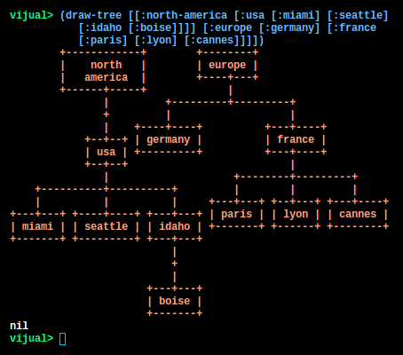
Large Example: (Data from the "Tree of Life" Web Project)
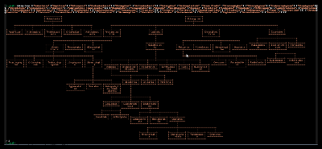
draw-tree-image- Draws a tree to a java Image. Returns a newly created image.
usage: (draw-tree-image tree)
(draw-tree-image [[:north-america [:usa [:miami] [:seattle] [:idaho [:boise]]]] [:europe [:germany] [:france [:paris] [:lyon] [:cannes]]]])
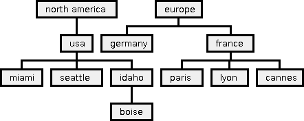
Large Example: (Data from the "Tree of Life" Web Project)
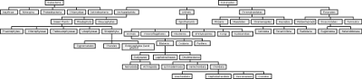
draw-graph- Draws an undirected graph to the console. Requires a list of pairs representing the edges of the graph. Additionally, a separate map can be included containing node information mapped via the node ids in the edge list.
usage: (draw-graph edges) (draw-graph edges nodes)
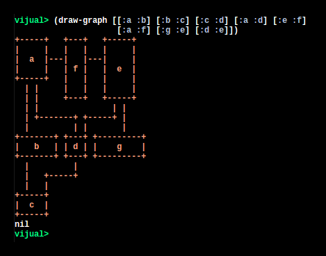
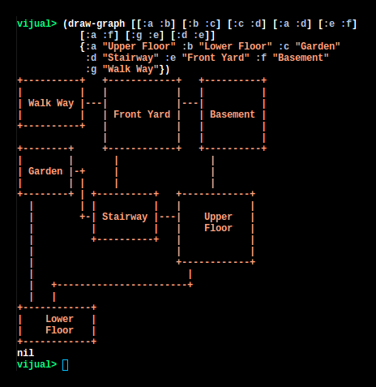
Large Example: (Map of locations in Zork 1)
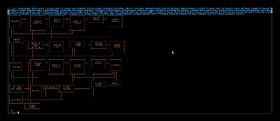
draw-graph-image- Draws an undirected graph to a java image. Requires a list of pairs representing the edges of the graph. Additionally, a separate map can be included containing node information mapped via the node ids in the edge list.
usage: (draw-graph-image edges) (draw-graph-image edges nodes)
(draw-graph-image [[:a :b] [:b :c] [:c :d] [:a :d] [:e :f] [:a :f] [:g :e] [:d :e]])
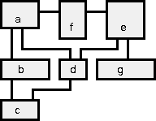
(draw-graph-image [[:a :b] [:b :c] [:c :d] [:a :d] [:e :f] [:a :f] [:g :e] [:d :e]] {:a "Upper Floor" :b "Lower Floor" :c "Garden" :d "Stairway" :e "Front Yard" :f "Basement" :g "Walk Way"})
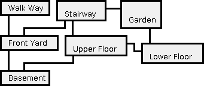
Large Example: (Map of locations in Zork 1)
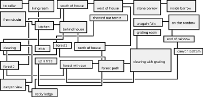
draw-directed-graph- Draws an directed graph to the console. Requires a list of pairs representing the edges of the graph. Additionally, a separate map can be included containing node information mapped via the node ids in the edge list. An effort is made to have majority of 'arrows' in the graph move in a downward direction.
usage: (draw-directed-graph edges) (draw-directed-graph edges nodes)
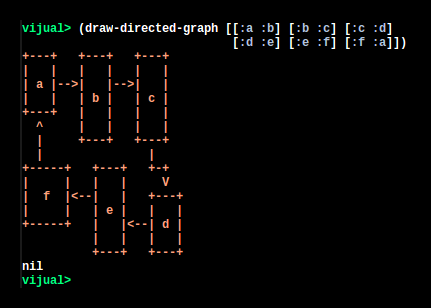
Large Example: (Graph of Clojure classes
adopted from Chouser)
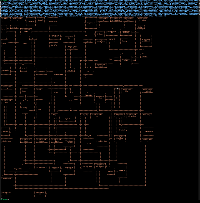
draw-directed-graph-image- Draws an directed graph to a java image. Requires a list of pairs representing the edges of the graph. Additionally, a separate map can be included containing node information mapped via the node ids in the edge list. An effort is made to have majority of 'arrows' in the graph move in a downward direction.
usage: (draw-directed-graph-image edges) (draw-directed-graph-image edges nodes)
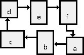
Large Example: (Graph of Clojure classes
adopted from Chouser)
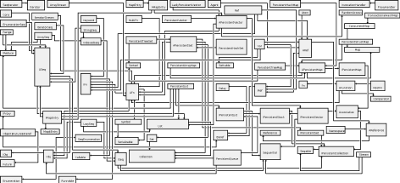
draw-directional-acyclic-graph- Draws a DAG to the console or to a bitmap. This function is not yet implemented. When/if it becomes available, it will render a graph in a similar style to draw-tree, but allowing multiple parent links to children. It will be less space efficient than draw-directional-graph, but will have a clearer indication of hierarchy.
draw-binary-tree- Draws a binary tree to the console. Nodes are in the form [text left right] where 'left' and 'right' are optional fields containing the children of this node.
usage: (draw-binary-tree tree)
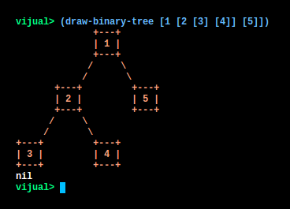
Large Example:
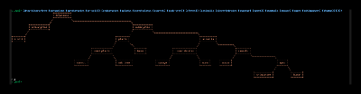
{kind=link}
{kind=link}
{kind=link}
{kind=link}
{kind=link}